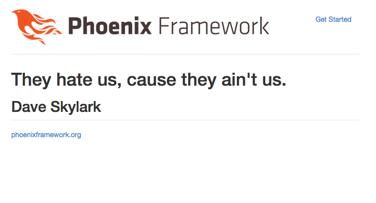

Let's add a detail page for the quote. This will be in the quote controller and the show action.
To start with let's edit the quote saying on the index page to link to the detail page. Edit web/templates/quote/index.html.eex to look like this:
<table>
<thead>
<tr>
<th>Saying</th>
<th>Author</th>
</thead>
<%= for q <- @quotes do %>
<tr>
<td>
<a href="<%=quote_path(@conn, :show, q.id) %>">
<%= q.saying %>
</a>
</td>
<td>
<%= q.author %>
</td>
</tr>
<% end %>
</table>
Awesome, this added a link to the detail page on the index page. When you click the link you'll see an error that we haven't build the show action in the quotes controller. Let's add that now.
Edit web/controllers/quote_controller.ex to look like this:
defmodule Splurty.QuoteController do
use Phoenix.Controller
alias Splurty.Router
import Splurty.Router.Helpers
plug :action
def homepage(conn, _params) do
render conn, "homepage.html"
end
def index(conn, _params) do
conn
|> assign(:quotes, Repo.all(Splurty.Quote))
|> render("index.html")
end
def new(conn, _params) do
render conn, "new.html"
end
def create(conn, %{"quote" => %{"saying" => saying, "author" => author}}) do
q = %Splurty.Quote{saying: saying, author: author}
Repo.insert(q)
redirect conn, to: quote_path(conn, :index)
end
def show(conn, %{"id" => id}) do
{id, _} = Integer.parse(id)
conn
|> assign(:quote, Repo.get(Splurty.Quote, id))
|> render("show.html")
end
end
Save the file. One thing you'll notice is we need to convert the input from a string as an id to an integer. If we don't do this, Ecto will give us error messages.
If you try to view the page again, you'll notice an error message that indicates we haven't build the template yet. This makes sense, let's build one.
Add a file to the folder web/templates/quote/show.html.eex that looks like this:
hi
Save the file and refresh the page. Excellent, the error goes away and we see "hi". Let's put details about the quote we're showing on the page now.
Edit web/templates/quote/show.html.eex to look like this:
<h1>
<%= @quote.saying %>
</h1>
<h2>
<%= @quote.author %>
</h2>
Save the file and refresh the page. Awesome, we now see an awesome detail page.
You should see something that looks like this now:
